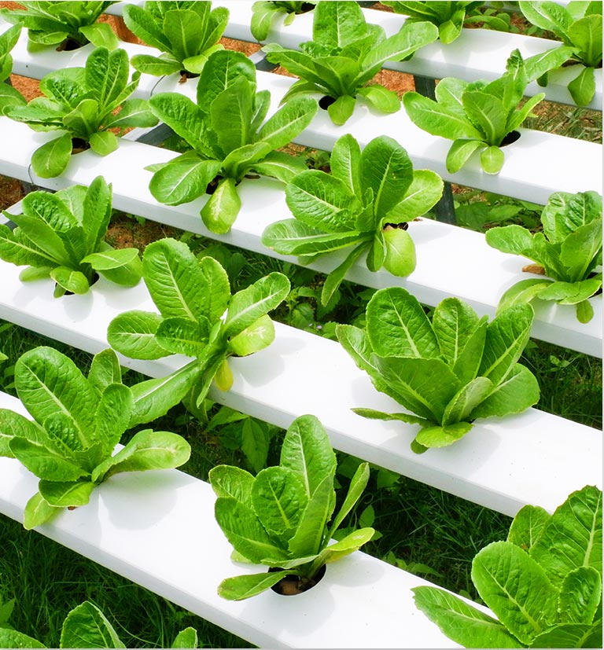

<div class="story-area row no-margin">
    <div class="story-img-area col-sm-6">
            <div class="story-img">   
            </div>
            
    </div>
    <div class="story-zone col-sm-6">
        <div class="story-title">            
            <label>
                Our crops are grown in absolutely clean conditions. The only element that touches their leaves is a mild breeze of filtered air.
            </label>
        </div>
        <!-- <div class="story-desc">
            <label>
                We are your neighbors. That's the key to growing local. Our farms are built in the city.
                Our crops grow from our farm to your neighbourhood store in hours, not days or weeks.</label>
        </div>
        <div class="story-desc">
            <label>
                The amount we grow is always perfect. We plant and harvest according to our cutomers needs.
                There is no waste.</label>            
        </div>
        <div class="story-desc">
            <label>
                Our operations systems allows us to trace every plant from seed to store Traceability ensures the 
                highest possible quality.
            </label>            
        </div> -->
        <div class="aquaverty-btn">
            Technology >
        </div>
    </div>
    <!-- <div class="divider-area">
        <div class="divider"></div>
    </div> -->
</div>